Chunks, settings & saving
Grow or shrink your map one tile at a time, tune every terrain-wide setting from a friendly six-tab strip, and understand exactly where your terrain is saved on disk.

What you'll learn
- What a chunk is, and how it compares with Roblox terrain regions and the Terrain Editor's Generate tab.
- The Chunks tool: add, remove and select chunks, per-chunk Merge Mode, and dragging single terrain points with Vertex Handles.
- All six pages of the Settings tool: Grid, New Chunks, Grass, Display, LOD & Nature, Storage.
- The terrain's Inspector groups — the full property list behind the Settings tool.
- Storage: Save Data, Import MST, Bake Meshes and Export GLB — and where your data lives on disk.
- Which settings lock on purpose once your map has chunks.
A few Godot words first
- Node
- One object in your scene, like an Instance in Roblox. The terrain is a node called
MarchingSquaresTerrain. - Scene /
.tscn - A saved scene file — roughly a Roblox place.
res://means "the project folder". - Scene dock
- The tree of nodes at the top-left, like Roblox's Explorer.
- Inspector
- The panel on the right listing every property of the selected node, like Roblox's Properties.
- Resource /
.res - A bundle of data saved as its own file. Your terrain's heights and paint live in one of these.
- FileSystem / History docks
- Tabs at the bottom-left. FileSystem lists your project's files (a bit like Roblox's Asset Manager); History lists every undo step by name, and clicking an earlier line jumps back to it.
- Viewport / 3D view
- The big picture of your world in the middle of the editor.
- Cell and chunk
- A cell is one square of the terrain grid. A chunk is a block of cells (32×32 by default) — one "tile" of the map.
What is a chunk?
The terrain is a grid of square cells. Cells are grouped into square chunks — by default 32×32 cells each (the Chunk Size setting). A chunk is the unit the terrain loads, builds a mesh for, and saves. The tutorial island 02_island has 9 chunks laid out 3×3, named Chunk (0, 0) … Chunk (2, 2) (column, row).
The whole world is only the chunks that exist. The empty space around them holds no data at all until you add a chunk there.
Roblox terrain is one huge voxel volume — you can sculpt anywhere. Here the world is built from chunks, fixed-size tiles that you place explicitly. There's no infinite canvas: you add map area by clicking green + markers and remove area by deleting chunks. Think of a chunk as a Roblox terrain region that you place by hand.
Roblox's Terrain Editor has a Generate tab that fills a region with procedural hills. The equivalent here is the noise fields on the Settings tool's New Chunks tab: set Noise Amp / Freq / Seed (or a Noise Hmap) and every chunk you add afterwards is shaped by that noise instead of being flat.
Where these tools live
The terrain tools only appear while the MarchingSquaresTerrain node is selected — in the Scene dock or by clicking the terrain in the 3D view. If the toolbar disappears, you clicked away: select the terrain again. Click the dots:
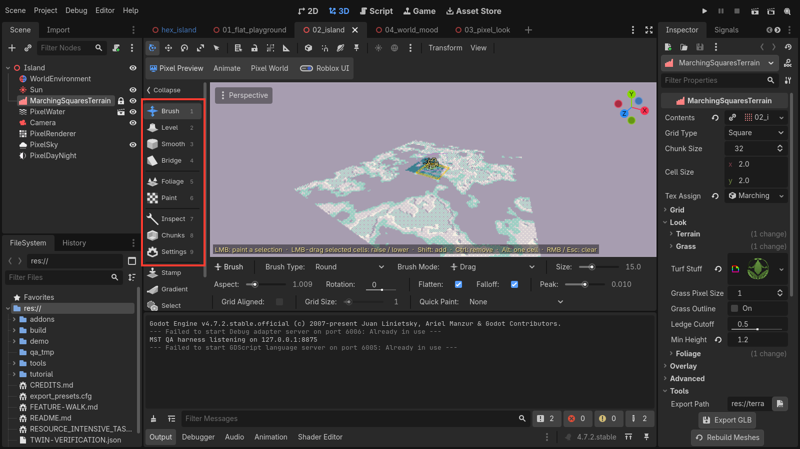
In Studio the terrain tools live on a ribbon tab that's always there. Here they're tied to the terrain node: select MarchingSquaresTerrain in the Scene dock first, exactly like selecting an object in Explorer before using its tools.
Guided tutorial: grow, trim and tune your island
About 15 minutes, on res://tutorial/02_island.tscn. Every step can be undone with Ctrl+Z.
- Open the island. In the FileSystem dock (bottom-left) open
tutorialand double-click02_island.tscn. ClickMarchingSquaresTerrainin the Scene dock. - Open the Chunks tool. Hover the 3D view and press 8 (or click Chunks). White chunk borders and green + discs appear. The strip reads 9 chunks.
- Add a chunk. Hover a green + (it brightens; the hint names its chunk coordinates) and left-click. The count becomes 10.
Clicking a green + adds a flat chunk beside the island (9 → 10). - Undo it. Press Ctrl+Z — one step, named "add chunk" in the History dock.
- Try a noisy chunk. Press 9, open the New Chunks tab and raise Noise Amp above 0. Back in the Chunks tool (8), add a chunk: it arrives as rolling bumps instead of flat ground.
With New-Chunk noise above zero, a freshly added chunk is generated with hills. - Select without deleting. Hold Ctrl and left-click a chunk. It gets a blue outline, the Chunk: dropdown jumps to it, and Remove Chunk lights up.
- Remove it. Click Remove Chunk. Then Ctrl+Z to bring it back.
- Tour the Settings. Press 9 and click through the six tabs. On Display, raise Pixel Size, flip Debug View and tick Editor Fog. Undo each with Ctrl+Z.
- Save. Press Ctrl+S. Saving the scene also saves the terrain's data file (see where data lives).
A plain left-click on a chunk removes it. To select a chunk you must hold Ctrl. If you deleted one by accident, Ctrl+Z brings it straight back.
The Chunks tool (Chunk Manager) — key 8
Tooltip: "Chunk Management Tool [8] — Used to create, delete and change chunks." Selecting it draws a chunk overlay on the terrain and shows the chunk strip at the bottom. The viewport caption reads "LMB on a green +: add a chunk · LMB on a chunk: remove it · Ctrl+LMB: select a chunk." A second line shows what's under the mouse, e.g. Chunk Manager | height -0.54 cell (43, 41) chunk (1, 1).
Reading the overlay
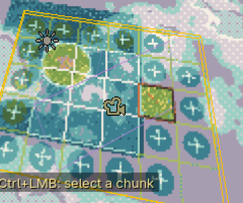
- New chunks must touch an existing chunk. Clicking a + that isn't adjacent warns "new chunks must touch an existing chunk." With zero chunks, the cell under your mouse becomes the first +.
- A selected chunk (Ctrl+click, or chosen in the dropdown) gets a blue outline.
The chunk strip
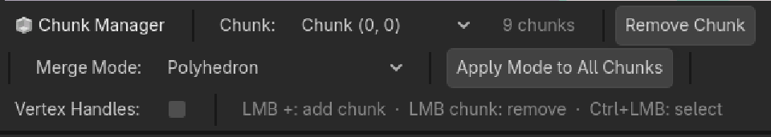
Chunk: dropdown
Picks the "active" chunk by name, Chunk (x, y). Its merge mode, vertex handles and Remove act on this chunk. Lists every chunk of the terrain.
- Tooltip
- "Chunk to edit: its merge mode, vertex handles and Remove act on it (or Ctrl+LMB a chunk in the viewport)."
- Shortcut
- Ctrl+LMB a chunk
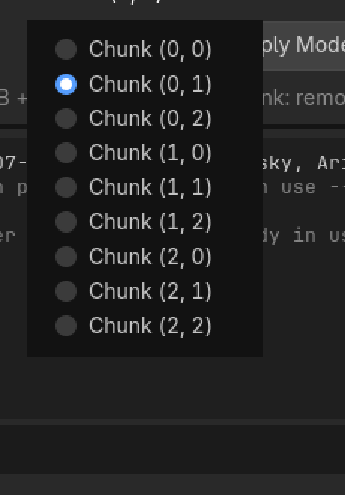
N chunks
A live count of chunks ("9 chunks").
- Note
- After undoing an add/remove, the label can briefly show the old number until the strip rebuilds. The chunk data itself is correct.
Remove Chunk
Removes the selected chunk. Undoable ("remove chunk"). Disabled until you select a chunk.
- Tooltip
- "Removes the selected chunk (undoable). In the viewport: LMB a chunk (red X) removes it, LMB a green + adds one."
Merge Mode
Sets the selected chunk's merge mode — how the terrain joins neighbouring heights. The effect is visible mainly on triangle/hex grids with stepped heights; on a square grid it is near-invisible.
- Values
- Cubic, Polyhedron, Rounded Polyhedron, Semi Round, Spherical
- Undo
- "chunk merge mode"
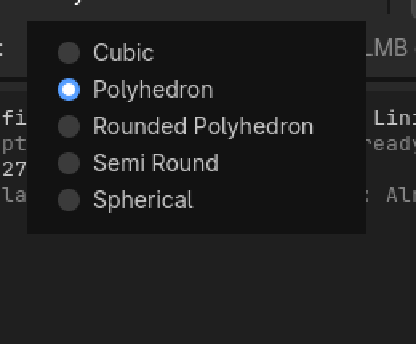
Apply Mode to All Chunks
Applies the current merge mode to every chunk, as one undo step ("chunk merge mode"). New chunks take their merge mode from Merge Mode on the Settings tool's Grid tab instead.
Vertex Handles
Turns on draggable height handles on every sample of the selected chunk. Drag one up or down to move that terrain point. One undo step per drag ("move terrain point"). Same as the Inspector's Tools → Handles.
- Caveat
- A 32-cell chunk has about 33×33 = 1089 handles, so they form a dense grey cluster that's hard to target. Easier on a smaller chunk.
Add chunk (gesture)
Left-click a green +. The new chunk is flat, or shaped by the noise on the Settings tool's New Chunks tab when Noise Amp > 0.
- Undo
- "add chunk"
Remove chunk (gesture)
Left-click an existing chunk (it shows red with an X). Or select it and press Remove Chunk.
- Undo
- "remove chunk"
Select chunk (gesture)
Ctrl+left-click a chunk: blue outline, dropdown updates, Remove Chunk enables.
Undo / Redo
Every chunk action is a single step: "add chunk", "remove chunk", "chunk merge mode", "move terrain point".
- Shortcut
- Ctrl+Z / Ctrl+Shift+Z
Chunk actions in motion
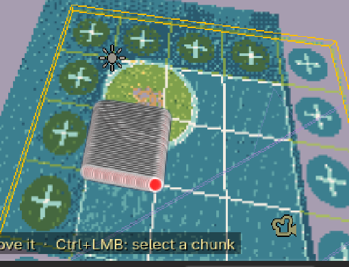
The Settings tool (Terrain Settings) — key 9
Tooltip: "Terrain Settings Tool [9] — Used to tweak global terrain settings." The bottom strip turns into a six-tab page — a friendlier, hand-picked subset of the terrain's Inspector. Tabs: Grid · New Chunks · Grass · Display · LOD & Nature · Storage.
- The strip wraps its fields into as many columns as fit your window, so the layout shifts with window size — the fields are the same.
- Every change applies live and is one undo step named
terrain setting <label>(e.g. "terrain setting pixel size").
"Grid type, chunk and cell size, blending, merge mode, collision."
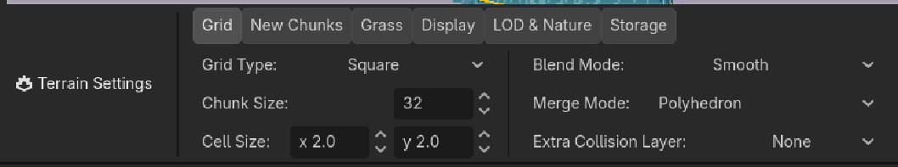
On a hex terrain the Grid page shows extra fields. Notice Ring Radius and Wrap Chunks greyed out — they're locked because hex-ring chunks already exist:
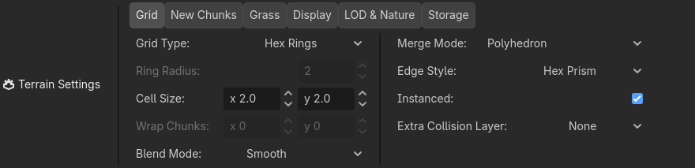
Grid Type
Square = marching squares over vertex heights (smooth). Triangle / Hex / Hex Rings = flat cells. Changing it clears the selection and rebuilds.
- Values
- Square, Triangle, Hex, Hex Rings
- Default
- Square
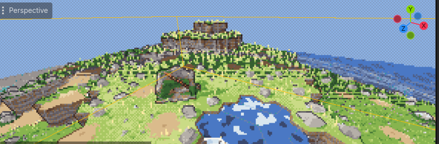
demo/hex_island.tscn) for contrast with the square island.Chunk Size locks
Cells per chunk edge (the original addon called it "Dimensions"). Fixed once chunks exist for this grid type: the change is ignored with a warning "chunk_size is fixed once chunks exist … (clear the data or switch grid type first)". Set it on an empty terrain.
- Range
- 2 – 64
- Default
- 32
Ring Radius locks
Radius of the hex disk each chunk owns; replaces Chunk Size. Greyed out once hex-ring chunks exist ("Fixed once hex-ring chunks exist: remove every chunk to change it").
- Range
- 1 – 16
Cell Size
Cell size in world units; hex and triangle grids use X only. Scales the whole terrain; changing it rebuilds all chunks.
- Range
- 0.1005 – 64 (min clamp 0.0505)
- Default
- 2.0, 2.0
Wrap Chunks locks
Torus wrap in chunks (x columns, y rows) — walk off one edge, appear at the other. 0 = no wrap. Locked once hex-ring chunks exist.
- Range
- 0 – 128
- Default
- 0, 0
Blend Mode
How textures blend between paint slots.
- Values
- Smooth, Hard Squares, Hard Vertices
- Default
- Smooth
Merge Mode (default)
The merge mode given to newly added chunks. Per-chunk merge mode is set in the Chunks tool.
- Values
- Cubic, Polyhedron, Rounded Polyhedron, Semi Round, Spherical
- Default
- Polyhedron
Edge Style
How height steps render on triangle/hex grids: ramps (Flat Walls / Slopes), stepped terraces (Terraces) or stacked prism columns (Hex Prism). See the Edge Style scrubber.
- Values
- Flat Walls, Terraces, Slopes, Hex Prism
- Default
- Hex Prism (hex scenes)
Instanced
Hex + Hex Prism only: draw columns as GPU MultiMesh instances instead of one meshed chunk, so height edits only re-upload the cell map.
Extra Collision Layer
Adds one extra physics layer (9–32) to the terrain's collision, so other objects can test against it separately.
- Values
- None, 9 … 32
- Default
- None
"Textures and noise given to newly added chunks." Nothing here changes existing chunks — it only shapes the next chunk you add.
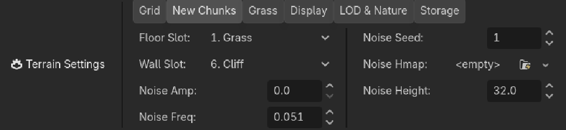
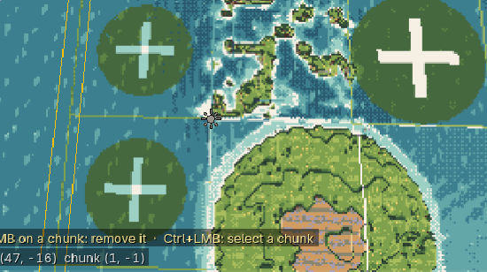
Floor Slot
Floor texture of newly added chunks (pick by slot name; see Painting).
- Range
- Slots 0 – 15
- Default
- 1. Grass
Wall Slot
Wall (cliff side) texture of newly added chunks.
- Range
- Slots 0 – 15
- Default
- 6. Cliff
Noise Amp
Height amplitude of the fractal noise for new chunks. 0 = flat chunk; above 0 = rolling bumps.
- Range
- 0 – 256
- Default
- 0.0
Noise Freq
Frequency of the new-chunk noise: higher = smaller, busier bumps.
- Range
- 0 – 4
- Default
- 0.051
Noise Seed
Seed of the noise. Same seed = same hills.
- Range
- Any 32-bit integer
- Default
- 1
Noise Hmap
A Noise resource for new chunks (heights = noise × Noise Height). Overrides Noise Amp / Freq when set.
- Default
- <empty>
Noise Height
Height range applied to Noise Hmap.
- Range
- 0 – 1024
- Default
- 32.0
"Grass growth, animation and blade size." Grass grows on paint slots marked "Has grass" — see Foliage, grass & flowers.
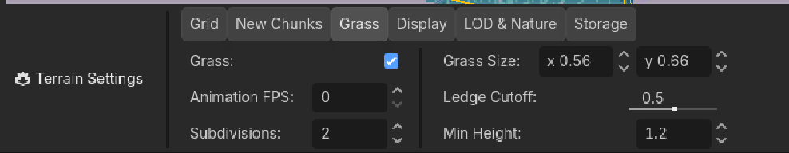
Grass
Grow grass on slots marked "Has grass".
- Default
- On
Animation FPS
Above 0 animates grass at a limited frame rate (a retro, steppy sway); 0 = smooth wind. Undo step "terrain grass animation fps".
- Range
- 0 – 60
- Default
- 0
Subdivisions
Grass blades per cell = subdivisions² (2 → 4 blades, 3 → 9).
- Range
- 1 – 8
- Default
- 2
Grass Size
Blade size (width, height).
- Range
- 0.0505 – 16
- Default
- 0.56, 0.66
Ledge Cutoff
Grass isn't planted on cliff-edge bands stronger than this value.
- Range
- 0 – 1
- Default
- 0.5
Min Height
No grass below this height — set it to your water level so grass doesn't grow underwater.
- Range
- −1024 – 1024
- Default
- 1.2
"Pixel size, grid overlay, fog and debug views." These change how the terrain is shown, not its shape.
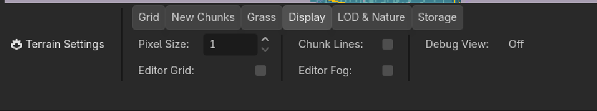
Pixel Size
Pixel-size multiplier in the pixel renderer: bigger = chunkier blocks. A clearly visible effect — try the scrubber. The pixel renderer itself is covered on The pixelizer.
- Range
- 1 – 16 (or greater)
- Default
- 1
Editor Grid
Draws cell lines on the terrain while editing (in game it's Show Grid). Subtle on a busy texture — clearest zoomed in.
- Default
- Off
Chunk Lines
The grid overlay also draws chunk borders. Chunk borders read more clearly than cell lines.
- Default
- Off
Editor Fog
Shows the fog of war (cell data) while editing. With no revealed cells, the terrain goes dark under fog.
- Default
- Off
Debug View
A terrain debug shader. All seven views look clearly different — see the scrubber.
- Values
- Off, Slope, Height Contours, Slot Ids, Chunk Borders, Cell Ids, Cell Data
- Default
- Off
"Distant low-detail ring; droplet erosion and wild flowers (child nodes with their own strip)."
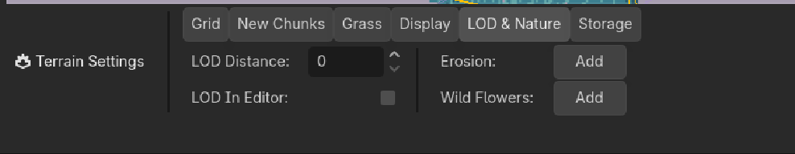
LOD Distance
A distant low-detail ring: chunks far from the LOD focus and camera get flat cell tops, plain walls, no grass and no drawn props (collision stays). 0 = off.
- Range
- 0 – 4000 (or greater)
- Default
- 0
LOD In Editor
Apply the distant LOD ring in the editor too. Off = the editor always shows full detail.
- Default
- Off
Erosion (Add / Select)
Selects this terrain's MarchingSquaresErosion child, adding one if there is none (undoable). Hydraulic droplet erosion with its own strip — see Sky, weather, water & effects.
Wild Flowers (Add / Select)
Selects this terrain's MarchingSquaresWildFlowers child, adding one if none (undoable). Clustered meadow flowers.
"Where the terrain data lives; save, import, bake and export." The page changes with Storage Mode.
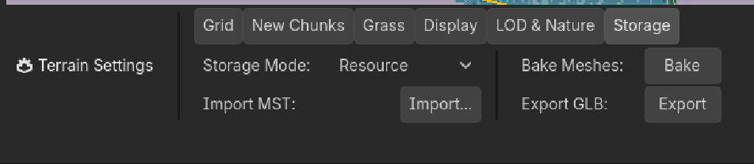
Switch Storage Mode to Baked or Runtime and more fields appear:
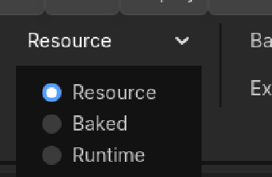
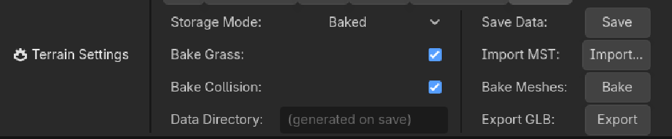
Full details for each Storage field are in Storage, baking & exporting below.
Lost track of what you changed? Every Settings field is a single undo step named "terrain setting …" — open the History dock (next to FileSystem, bottom-left) to see them and click an earlier line to jump back.
Display settings, visually
Pixel Size
Debug View
Seven debug shaders that recolour the terrain to show hidden information. Handy when something looks wrong — e.g. Chunk Borders to see exactly where one chunk ends.
Editor Grid
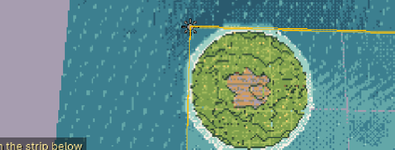
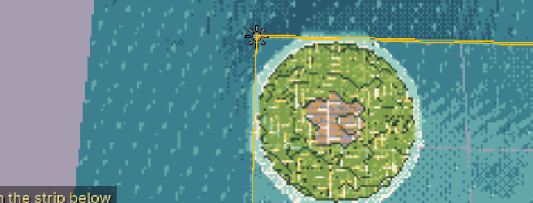
Editor Fog
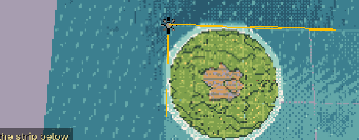
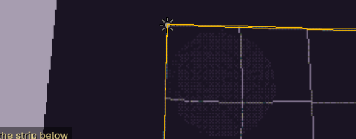
Edge Style (hex terrain)
Only on Triangle / Hex / Hex Rings grids. Differences are subtle on gentle terrain like this island — they matter most on steep cliffs with distinct height levels.
The terrain's Inspector (full property set)
The Settings tool is a curated subset. The Inspector on the right shows everything: a few top-level fields first, then collapsible groups.
The Inspector is Studio's Properties window. The groups (Grid, Look, Overlay, Advanced, Tools) are like Properties' collapsible category headers. Grey "(1 change)" notes mean something in that group differs from its default.
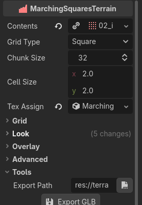
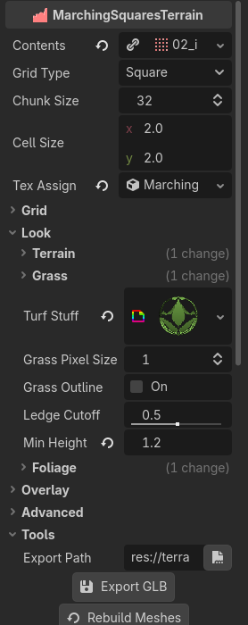
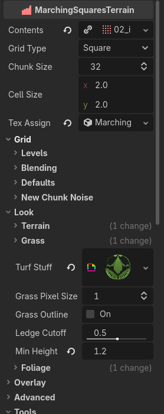
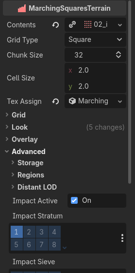
Top level
Contents (the MarchingSquaresTerrainData resource — where chunk data lives), Grid Type, Chunk Size, Cell Size, Tex Assign (a MarchingSquaresTexturePreset).
Grid › Hex Rings
Ring Radius, Wrap Chunks, Wrap Period.
Grid › Levels
Level Height.
Grid › Hex Edges
Hex Edge Style (= Edge Style), Hex Edge Instanced (= Instanced), Hex Edge Grooves.
Grid › Blending
Blend Mode.
Grid › Defaults
Default Merge Mode, Default Floor Slot, Default Wall Slot (Settings: Merge Mode, Floor Slot, Wall Slot).
Grid › New Chunk Noise
Amplitude, frequency, seed, Noise Hmap, Noise Hmap Height (Settings → New Chunks).
Look › Terrain
Land Stuff (shader material), Pixel Size, Outline, Outline ID, render Layers, Cast Shadows.
Look › Grass
Grass enabled, Subdivisions, Grass Size, Grass Texture, Turf Stuff (material), Grass Pixel Size, Grass Outline, Ledge Threshold (Settings: Ledge Cutoff), Min Height.
Look › Foliage
Scatter Items, Scatter Group Tiles, Scatter Body Quiet ms, Scatter Follow Interval ms. Covered on page 5.
Overlay › Grid
Show Grid, Show Grid In Editor (= Editor Grid); Grid Color, Grid Width, Grid Fade Distance, Grid Chunk Lines (= Chunk Lines).
Overlay › Debug Views
Shader Cursor, Debug View, Contour Step.
Overlay › Fog Of War
Fog Enabled, Fog In Editor (= Editor Fog), Fog Transition, Fog Color, Fog Color Alt; Hidden Cells: Fog Hidden Dim, Fog Hidden Saturation; Fog Hatch, Fog Softness.
Overlay › Highlight
Highlight Width.
Advanced › Storage
Storage Mode, Bake Grass, Bake Impact (= Bake Collision), Data Directory, Save Terrain Data (button).
Advanced › Regions
Region Collision Cells, Region Mesh Cells, Region Max Chunks.
Advanced › Distant LOD
LOD Distance, LOD Focus (a Node3D the ring is measured from), LOD In Editor, LOD Refresh Interval.
Advanced › Hex Maps
Map Window Radius, Map Window Focus, Map Window Margin, Map Window Refresh Interval.
Advanced › Collision
Impact Active, Impact Stratum (physics layers), Impact Sieve (mask), Collision Rebuild Delay ms.
Advanced › Integration
Publish Height Texture, Publish Sea Pad, Publish Sea Falloff, Publish Height Interval ms.
Advanced › Change Detection
Look Poll Interval.
Tools
Export Path (*.glb), Export GLB (button), Rebuild Meshes (button), Import Path (*.tscn,*.res), Import MST Data (button), Bake Parent (a Node), Bake Static Meshes (button), Export Atlas Max Size (256 – 16384), Handles (= Vertex Handles).
Surroundings
Waters (array of PixelWater), Builder Meshes (array of PixelBuilderMesh).
Storage, baking & exporting
Storage Mode
Resource (default) = all chunks live in the data resource (the .res next to the scene). Baked / Runtime = one file per chunk in Data Directory, written on scene save (only changed chunks); Baked also stores meshes for fast loading.
- Values
- Resource, Baked, Runtime
Bake Grass
Also store the grass multimeshes in the baked files.
Bake Collision
Also store the collision faces.
Data Directory
Folder for the per-chunk files. Empty (shows "(generated on save)") = a folder generated next to the scene on save. Press Enter to apply what you type.
Save Data
"Save" writes the terrain data now (changed chunks only).
Import MST
"Import..." reads the data of the original MarchingSquaresTerrain addon (the non-Rust version). The file dialog is filtered to *.tscn (an original scene — reads grid settings + its data_directory) or *.res (MSTChunkData / metadata.res). You can also pick its data folder with Select This Folder.
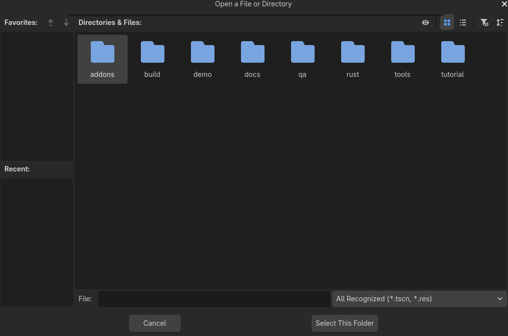
*.tscn and *.res. Pick the original scene, its data folder, or a metadata.res.Bake Meshes
"Bake" creates a sibling Node3D named <Terrain>Baked with one MeshInstance3D per chunk (Chunk_x_y). Each has a StaticBody3D → CollisionShape3D (when collision is on) and a Grass MultiMeshInstance3D where grass exists. It's a frozen static copy you can keep or export. Undoable ("Bake terrain static meshes"). With no Bake Parent set it warns "no Bake Parent assigned; the baked meshes are placed beside the terrain."
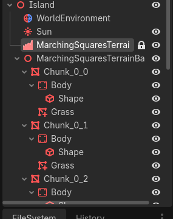
MarchingSquaresTerrainBaked → Chunk_x_y → Body / Shape / Grass.Export GLB
"Export" runs the geometry baker: bakes a texture atlas, then writes every chunk to the Export Path as a .glb model. A progress row appears in the strip; the editor pauses a few seconds to write the file. For scale: the 9-chunk tutorial island exports as a GLB of about 7 MB.
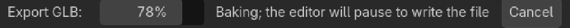
With the Compatibility renderer and multi-threaded import on, exporting a GLB with two or more textures into the project folder can crash the editor when Godot re-imports it — and again on every start until the file is removed. The addon shows an Export Anyway / Cancel confirmation in that case. Safer options: export outside the project (or to a folder containing a .gdignore file), turn off Project Settings → Editor → Import → Use Multiple Threads, or switch the renderer to Forward+ / Mobile. This project ships with the Compatibility renderer, so the guard can appear here.
Where your terrain lives on disk
| Mode | What's on disk | Example |
|---|---|---|
| Resource (default) | All chunk data inside one MarchingSquaresTerrainData resource — a .res file shown in the Contents field. It sits next to the scene, sometimes in a sibling data/ folder. Saving the scene saves it. | 02_island → res://tutorial/data/02_island.reshex_island → res://demo/hex_island_data.res |
| Baked | One file per chunk in Data Directory, plus stored meshes (optionally grass / collision) for fast loading. Only changed chunks are rewritten on save. | Data Directory, or a folder generated next to the scene |
| Runtime | One file per chunk in Data Directory — data only, no meshes. | Same as Baked |
Roblox saves terrain inside the place file automatically. Here the terrain data is a separate resource file (.res) next to your scene — or per-chunk files in a folder. Press Ctrl+S to save the scene and its data together. If you copy a scene to another project, bring its .res too.
Settings that lock on purpose
These are by design, not bugs — changing them would scramble data that already exists.
| Setting | Locks when | How to change it |
|---|---|---|
| Chunk Size | Chunks exist for the current grid type. The change is ignored with the warning "chunk_size is fixed once chunks exist …". | Set it on an empty terrain, or clear the data / switch grid type first. |
| Ring Radius | Hex-ring chunks exist (field greyed). | Remove every chunk, then change it. |
| Wrap Chunks | Hex-ring chunks exist (field greyed). | Remove every chunk, then change it. |
The Roblox UI switch at the top of the 3D view changes the Builder to a Studio-style ribbon. It does not change the Chunks or Settings strips — they look the same either way. See Greyboxing with the Roblox UI.
Recipes
- Select the terrain, press 8.
- Click green + markers around the edge — each adds one chunk. New chunks must touch an existing one.
- Sculpt the new flat ground (Sculpting terrain) and paint it (Painting).
- Press 9 → New Chunks.
- Set Noise Amp (e.g. above 0), adjust Noise Freq, try different Noise Seed values.
- Press 8 and add chunks — each arrives pre-shaped. Not happy? Ctrl+Z, change the seed, add again.
- Set Noise Amp back to 0 when you want flat chunks again.
- Chunk Size only works on an empty terrain. Start a new terrain (or remove every chunk).
- Press 9 → Grid → set Chunk Size (2–64).
- Press 8; with zero chunks the cell under your mouse shows the first +. Click to place it.
- Press 9 → Storage → Bake.
- A
MarchingSquaresTerrainBakednode appears with oneChunk_x_ymesh per chunk. - Optional: set Bake Parent in Inspector → Tools to choose where it goes. Undo removes it.
- Inspector → Tools → set Export Path to a
.glboutside the project. - Settings → Storage → Export. Watch the progress row; the editor pauses briefly.
- Use the GLB in Blender or another engine — or re-import it (see Importing models).
- Press 9 → Display → Debug View → Chunk Borders (or tick Chunk Lines).
- See exactly where each chunk ends. Try Slope or Height Contours to read the shape.
- Set Debug View back to Off.
Check yourself
You wanted to select a chunk, clicked it, and it vanished. What happened, and what should you do?
A plain left-click on a chunk removes it. Press Ctrl+Z to bring it back, then hold Ctrl while clicking to select.
You change Chunk Size from 32 to 16 on the island and nothing happens. Why?
Chunk Size is fixed once chunks exist (by design). Set it on an empty terrain, or clear the data / switch grid type first.
How do you make every new chunk arrive with hills, like Roblox's Generate?
Settings (9) → New Chunks → raise Noise Amp above 0 (and tune Freq / Seed, or set a Noise Hmap). Then add chunks.
In Resource mode, where is the island's terrain data saved?
In the MarchingSquaresTerrainData resource shown in Contents — for 02_island, res://tutorial/data/02_island.res. Saving the scene saves it.
Related pages
- Your first world (quick start) — the terrain basics this page builds on.
- Sculpting terrain — shape the chunks you add.
- Painting, textures & tint — the Floor / Wall slots and Tex Assign.
- Foliage, grass & flowers — grass slots and scatter settings.
- The pixelizer — the renderer behind Pixel Size.
- Sky, weather, water & effects — erosion and other effects.
- Importing models — bring an exported GLB back in.
- Playtesting & exporting.
- Troubleshooting & FAQ.